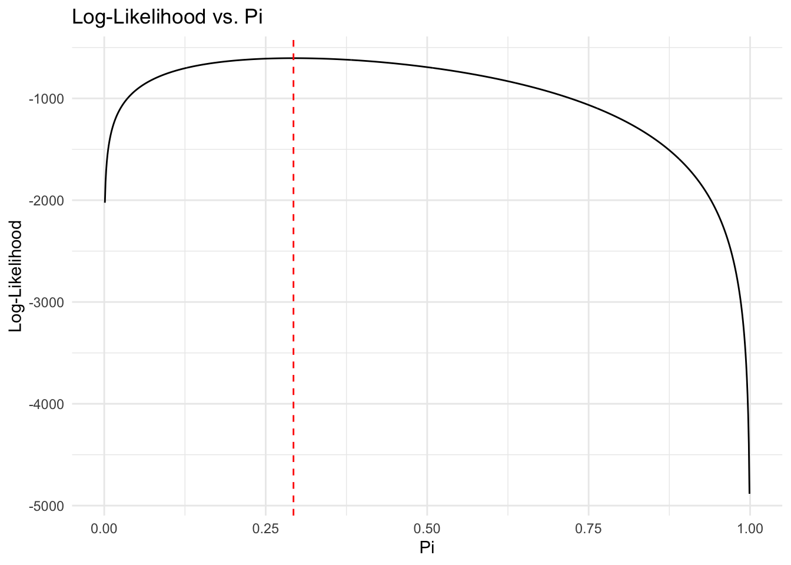

The goal here is to walk through the process of writing a likelihood function based on the data we observe, then programming that likelihood function and optimizing it with respect to the data.
The variable, \(y\), takes on values of zero and one; let’s write this in terms of the binomial distribution parameter \(\pi\), so it takes on the value of one with probability \(\pi\) and zero with probability \(1-\pi\).
The next step is to write a function that calculates the log-likelihood for a given value of \(\pi\) and the observed data \(y\). Do this over and over for different values of \(\pi\) and find the value of \(\pi\) that maximizes the log-likelihood. First, let’s do this using the maxLik library in R.
library(maxLik)# Write the binomial log-likelihood functionlog_likelihood <-function(pi, y) {sum(y *log(pi) + (1- y) *log(1- pi))}#maximize the function using maxLikm1m <-maxLik(y=y, log_likelihood, start =c(0.5), method ="NR") #Newton-Raphson method, starting value of 0.5summary(m1m)
Notice the value of \(\pi\) that maximizes the log-likelihood is the same as the sample mean of \(y\), which is 0.293. The function recovers the true value of \(\pi\) in this case.
Grid Search
One way to accomplish this is to use a grid search, where we calculate the log-likelihood for a range of values of \(\pi\) and find the value that maximizes the log-likelihood. We repeat this to the desired level of specificity.
# generate a vector of values of pi pi_trials <-seq(0, 1, by =0.001)# Calculate log-likelihood for each pi valuell_values <-sapply(pi_trials, log_likelihood, y = y)# Find the pi value that maximizes the log-likelihoodpi_hat <- pi_trials[which.max(ll_values)]# Plot log-likelihood valuesggplot(data.frame(pi = pi_trials, ll = ll_values), aes(x = pi, y = ll)) +geom_line() +geom_vline(xintercept = pi_hat, linetype ="dashed", color ="red") +labs(title ="Log-Likelihood vs. Pi",x ="Pi",y ="Log-Likelihood") +theme_minimal()

So what’s gone on here? We have 1000 observations of a binary variable; maximum likelihood is answering the question “what is the value of the parameter \(\pi\) that makes the observed data most likely?” To get that answer, write the likelhood of any value of \(\pi\) given the data, then maximize that function.
How did we maximize the function? Here, we used the maxLik package, which uses the Newton-Raphson method to find the maximum of the likelihood function. The start argument is the initial guess for the parameter \(\pi\). The method argument specifies the optimization method, in this case, Newton-Raphson.
Optimization
What is “optimization”? In this case, Newton-Raphson is a method for finding the maximum of a function. It’s an iterative process that starts with an initial guess for the parameter \(\pi\) and updates it in the direction of the maximum until it converges to the maximum.
xn = xn-1 – f(xn-1)/f’(xn-1)
Let’s write the Newton-Raphson algorithm ourselves:
Newton-Raphson
# use same data generated above; same LLF as above, aiming to recover pi#define the gradient - matrix of partial first derivatives of the log-likelihood function.gradient <-function(pi, y) {sum(y / pi - (1- y) / (1- pi))}#define the Hessian - matrix of partial second derivatives of the log-likelihood function.hessian <-function(pi, y) {sum(-y / pi^2- (1- y) / (1- pi)^2)}#define initial guess for pipi <-0.5#set convergence criteria - when new pi is within 1e-6 of old pi, stop iteratingtol <-1e-6#initialize iteration counter, set maximum iterationsiter <-0max_iter <-100#iterate the Newton-Raphson algorithmfor (iter in1:max_iter) {# Compute gradient grad <-gradient(pi, y)# Compute Hessian hess <-hessian(pi, y)# Update pi pi_new <- pi - (grad / hess) pi <- pi_new# Check for convergenceif (abs(pi_new - pi) < tol) {break } iter <- iter +1}#after convergence, print the resultprint(pi)
[1] 0.293
Ok, so now we have a log-likelihood function, and an algorithm for maximizing it. Let’s write this as a function that takes the observed data and returns the estimated parameter \(\pi\).
logistic_regression <-function(y, max_iter =100, tol =1e-6) {# Initialize pi pi <-0.5# Iterate the Newton-Raphson algorithmfor (iter in1:max_iter) {# Compute gradient grad <-gradient(pi, y)# Compute Hessian hess <-hessian(pi, y)# Update pi pi_new <- pi - grad / hess# Check for convergenceif (abs(pi_new - pi) < tol) {break } pi <- pi_new }return(list(pi = pi,iterations = iter ))}print(logistic_regression(y))
$pi
[1] 0.293
$iterations
[1] 2
Multiple Predictors
Let’s make this a little more complex by adding an intercept term and multiple predictors to the model - the likelihood now has to account for those \(X\) variables and maximize with respect to them.
# Generate binary y, and two X variables for regression; coefficients are -1, 0.5, -0.5set.seed(8675309)n <-10000X <-matrix(rnorm(n *2), ncol =2)true_beta <-c(-1, 0.5, -0.5)z <-cbind(1, X) %*% true_betaprob <-1/ (1+exp(-z))y <-rbinom(n, 1, prob)# Define the log-likelihood functionlog_likelihood <-function(beta, X, y) { z <- X %*% beta probs <-plogis(z)sum(y *log(probs) + (1- y) *log(1- probs))}# maximize using newton-raphson iterative algorithmlogistic_regression <-function(X, y, max_iter =100, tol =1e-6) {# Add intercept term to X if not already presentif (!all(X[,1] ==1)) { X <-cbind(1, X) }#define the gradient function - matrix of partial first derivatives of the log-likelihood function.gradient <-function(beta, X, y) {#p <- 1 / (1 + exp(-X %*% beta))p <-plogis(X %*% beta)t(X) %*% (y - p)} n <-nrow(X) k <-ncol(X)# set starting values for k columns of data (betas) beta <-rep(0, k) # Store gradients and log-likelihoods for analysis gradient_history <-list() ll_history <-numeric()# iterate NR for (iter in1:max_iter) {# compute gradient grad <-gradient(beta, X, y) gradient_history[[iter]] <- grad# compute log-likelihood ll <-log_likelihood(beta, X, y) ll_history[iter] <- ll# compute Hessian z <- X %*% beta probs <-plogis(z) W <-diag(as.vector(probs * (1- probs))) hessian <--t(X) %*% W %*% X# update beta delta <-solve(hessian, grad) beta_new <- beta - delta# check for convergenceif (max(abs(beta_new - beta)) < tol) {break } beta <- beta_new# compute standard errors for this model by taking the square root of the main diagonal elements of the inverse negative Hessian se <-sqrt(diag(solve(-hessian))) }return(list(coefficients = beta,st.errors = se,log_likelihood = ll,iterations = iter,gradient_history = gradient_history,ll_history = ll_history ))}#estimate the modellogit <-logistic_regression(X, y)#compare to glm estimates glm_fit <-glm(y ~ X, family = binomial)# compare the results glmcoefs <-coef(glm_fit)glmse <-sqrt(diag(vcov(glm_fit)))#html table comparing glmcoefs to logit$coefficientslibrary(kableExtra)data.frame(glmcoefs, logit$coefficients, glmse, logit$st.errors) %>%kable("html") %>%kable_styling("striped", full_width = F) %>%column_spec(1, border_right = T) %>%column_spec(2, border_right = T) %>%column_spec(3, border_right = T) %>%column_spec(4, border_right = T) %>%collapse_rows(columns =1:3, valign ="top")
glmcoefs
logit.coefficients
glmse
logit.st.errors
(Intercept)
-0.9531826
-0.9531826
0.0236756
0.0236748
X1
0.4938831
0.4938831
0.0238303
0.0238295
X2
-0.4719703
-0.4719703
0.0240294
0.0240286
Alright, lots of fun here. Now, let’s use the program above to estimate a logit model using the democratic peace data.
Logit using Democratic Peace data
dp <-read.csv("/users/dave/documents/teaching/606J-mle/2022/exercises/ex1/dp.csv", header=TRUE)# for the log_likelihood function below, define y as the variable "dispute" in the dp data frame, and x1, x2, and x3 as the variables "caprat", "border", and "deml" in the dp data frame, respectively.X <-as.matrix(dp[, c("caprat", "border", "deml")])y <-as.vector(dp$dispute)# Define the log-likelihood functionlog_likelihood <-function(beta, X, y) { z <- X %*% beta probs <-plogis(z)sum(y *log(probs) + (1- y) *log(1- probs))}# maximize using newton-raphson logistic_regression <-function(X, y, max_iter =100, tol =1e-6) {# Add intercept term to X if not already presentif (!all(X[,1] ==1)) { X <-cbind(1, X) }#define the gradient function - partial first derivatives of the log-likelihood function.gradient <-function(beta, X, y) {p <-1/ (1+exp(-X %*% beta))t(X) %*% (y - p)} n <-nrow(X) p <-ncol(X)# Initialize beta beta <-rep(0, p)# Store gradients and log-likelihoods gradient_history <-list() ll_history <-numeric()for (iter in1:max_iter) {# Compute gradient grad <-gradient(beta, X, y) gradient_history[[iter]] <- grad# Compute log-likelihood ll <-log_likelihood(beta, X, y) ll_history[iter] <- ll# Compute Hessian - 2nd partial derivatives z <- X %*% beta probs <-plogis(z) W <-diag(as.vector(probs * (1- probs))) hessian <--t(X) %*% W %*% X# Update beta delta <-solve(hessian, grad) beta_new <- beta - delta# Check for convergence - end if change in beta is less than tolerance value if (max(abs(beta_new - beta)) < tol) {break } beta <- beta_new }#compute standard errors for this model; take the square root of the main diagonal elements of the inverse negative Hessian se <-sqrt(diag(solve(-hessian)))return(list(coefficients = beta,st.errors = se,log_likelihood = ll,iterations = iter,gradient_history = gradient_history,ll_history = ll_history ))}#estimate the modellogit <-logistic_regression(X, y)logit$coefficients
# extract LL from glm # library(stats) # logLik(glm_fit)
What did we just do?
We wrote a log-likelihood function for a logistic regression model with multiple predictors.
To maximize the log-likelihood, we implemented a Newton-Raphson algorithm in the following steps:
Defined the gradient and Hessian functions. The gradient is the vector of first partial derivatives of the log-likelihood, and the Hessian is the matrix of second partial derivatives.
Initialized the beta coefficients and stored gradients and log-likelihoods.
Iterated the algorithm to update beta values.
Checked for convergence based on the change in beta.
Once the model converged, we computed standard errors for the estimated coefficients by taking the square root of the main diagonal elements of the inverse negative Hessian.